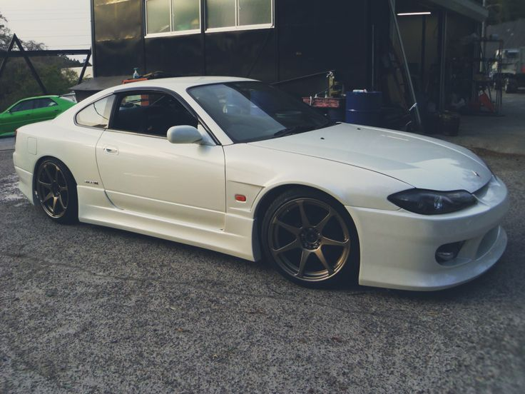
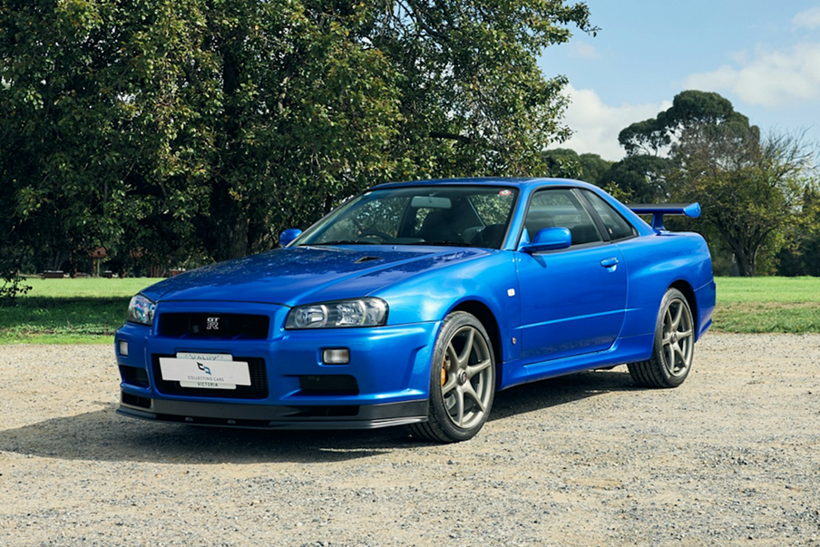
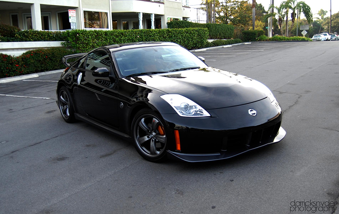

Продаётся Nissan Silvia — легендарный японский спортивный автомобиль, который сочетает стильный дизайн, мощность и отличную управляемость. Благодаря заднему приводу и спортивному характеру эта модель особенно популярна среди любителей дрифта и JDM-культуры. Nissan Silvia отличается агрессивным внешним видом, низким силуэтом и большим потенциалом для тюнинга. В зависимости от поколения автомобиль оснащается бензиновыми двигателями, включая известный турбированный SR20DET. Механическая коробка передач в соответствующих версиях обеспечивает больше контроля над автомобилем и делает вождение ещё интереснее. Nissan Silvia станет отличным выбором для тех, кто ценит японскую автомобильную классику, динамику и индивидуальный стиль.

цена=77668Евро
Продаётся Nissan Skyline — легендарный японский спортивный автомобиль, который сочетает мощность, стиль и передовые технологии. Эта модель известна своим агрессивным дизайном, отличной управляемостью и большим потенциалом для тюнинга. Особое внимание привлекает версия Skyline GT-R, оснащённая знаменитым двигателем RB26DETT с двумя турбинами и системой полного привода ATTESA E-TS. Благодаря своим успехам в автоспорте Nissan Skyline получил мировую известность и стал символом японской автомобильной культуры. Автомобиль отличается узнаваемым внешним видом, спортивным характером и широкими возможностями для модернизации. Nissan Skyline станет отличным выбором для настоящих ценителей JDM, которые ищут легендарную классику с богатой историей и неповторимым характером.

цена=219000-400000Евро
Продаётся 2017 Nissan GT-R NISMO AWD Coupe — мощный японский спортивный автомобиль, созданный для тех, кто ценит скорость, технологии и агрессивный дизайн. Под капотом установлен 3,8-литровый двигатель V6 с двумя турбинами, развивающий около 600 лошадиных сил. Система полного привода AWD обеспечивает отличное сцепление с дорогой, а 6-ступенчатая роботизированная коробка передач с двумя сцеплениями позволяет быстро переключать передачи. Версия NISMO отличается улучшенной аэродинамикой, спортивной подвеской, усиленными тормозами и элементами кузова из углеродного волокна. Сочетание высокой мощности, точного управления и современных технологий делает этот GT-R настоящим представителем японских суперкаров. Nissan GT-R NISMO 2017 года — отличный выбор для тех, кто хочет получить яркие эмоции от вождения и владеть автомобилем с легендарным характером.

цена=156000 Евро
Продаётся Nissan 350Z NISMO — яркий японский спортивный автомобиль, который сочетает мощный двигатель, агрессивный дизайн и настоящий спортивный характер. Под капотом установлен 3,5-литровый бензиновый двигатель V6, который в зависимости от версии развивает до 306 лошадиных сил. Задний привод обеспечивает динамичное управление и дарит удовольствие от вождения. Версия NISMO отличается спортивным аэродинамическим обвесом, усовершенствованной подвеской, улучшенной управляемостью и уникальными элементами дизайна. Длинный капот, широкие колёсные арки и низкий силуэт подчёркивают характер автомобиля. Nissan 350Z NISMO идеально подойдёт для любителей японской автомобильной культуры, которые ценят мощность, стиль и возможности для тюнинга. Это автомобиль, который привлекает внимание на дороге и дарит незабываемые впечатления от каждой поездки.

цена=20000-40000Евро